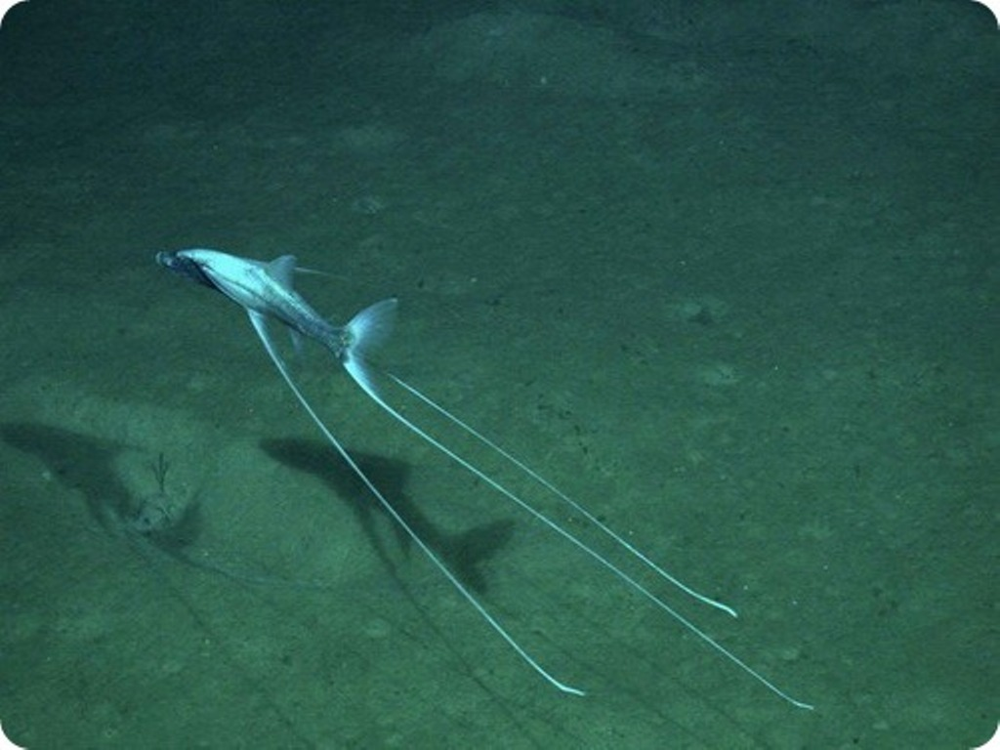
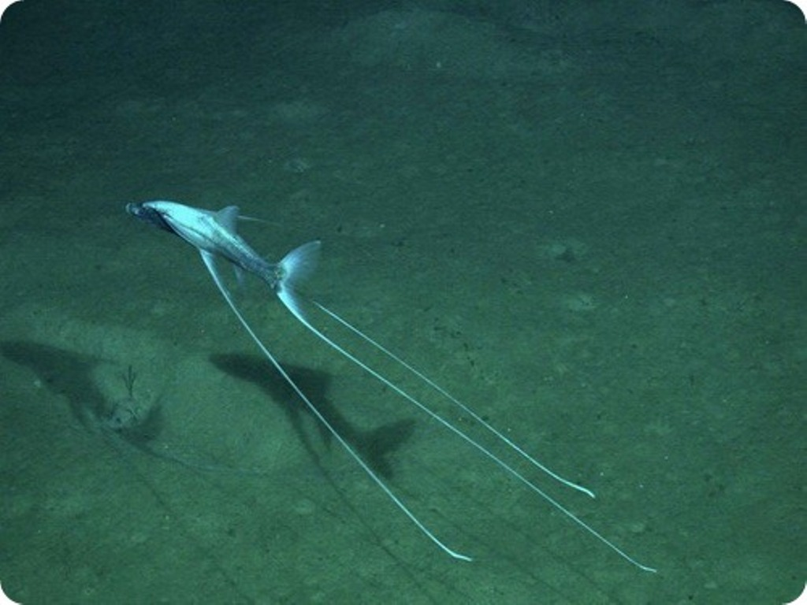

Tripod Fish
Scientific name: Bathypterois grallator

About Tripod Fish
A tripod fish, also known as a "stilt walker" lives on the ocean floor at depths from 2,950 to 15,400 feet, which are the
midnight and abyssal zones. The average tripod fish grows 12 inches long, with a maximum length of 14 inches. The elongated
tips from the pelvic and caudal fins are called elements or rays. The rays are limp when the fish swims and become more rigid
while standing, It also has very small eyes due to the lack of light at these depths.
The rays allow it to stand about 3 feet above the seafloor, usually facing the current and staying still while hunting.
It waits for zooplankton, small planktonic crustaceans, tiny shrimp, and other small organisms that are moved through the
current. The rays act as hands, gathering and bringing its food up to its gaping mouth.
Learn more about tripod fish at these sites:
Aquarium of the Pacific - Tripod Fish
Wikipedia - Bathypterois grallator